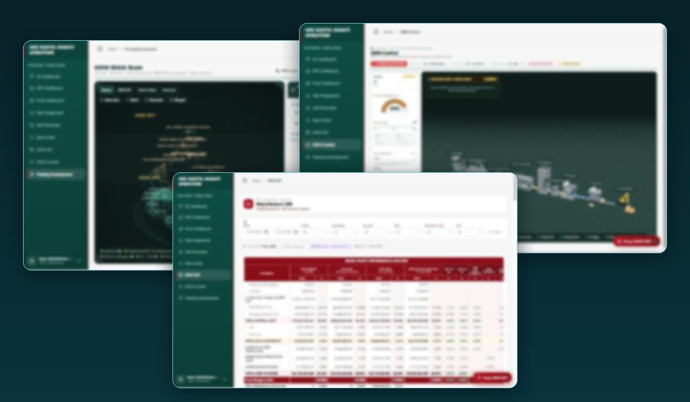

ODIN: One Digital Nabati Operation
ODIN is a manufacturing operations platform that connects plant profitability with what happens on the production line. It shows where cost can be improved, explains it in operational terms, and helps teams act on it, with AI support and human approval at every step.

Blurred: confidential dataThe problem
Financial results and production were managed in separate places. It was hard to follow a cost issue from the report to the line, so improvements came late and were difficult to verify.
Insight came late
Cost performance was reviewed after the fact, without a clear view of where the issue started.
Finance and production apart
Cost reports and production data were not connected, so each team saw only part of the picture.
Actions hard to verify
Recommendations were written by hand and were hard to trace back to the data behind them.
How ODIN closes the loop
Each module passes its result to the next, so a cost issue can become an action on the line.
- ODIN GP1
See where margin can improve
Analyses production cost against plan and points to where action matters most.
- ODIN Brain
Connect it to the process
A knowledge graph links cost issues to the production knowledge behind them.
- ODIN Control
Act on the line
Production teams receive clear, prioritised actions and monitor every line in one place.
Feedback: input from the team is captured and reused, so recommendations improve over time.
The three modules
 Margin analytics
Margin analytics
ODIN GP1
Cost and margin analysis with prioritised, AI-assisted recommendations.
Read more Shop floor
Shop floor
ODIN Control
A cockpit for the production line, with a 3D view and real-time alerts.
Read more Knowledge graph
Knowledge graph
ODIN Brain
A knowledge graph that connects cost issues to process knowledge.
Read moreDesign principles
Grounded AI
AI output is based only on verified data and is checked before anyone sees it.
Act on evidence
Every recommendation must address a measured issue and state a clear target.
People decide
Teams review and approve what reaches the line, and their feedback improves later recommendations.
One source of truth
All modules read the same reconciled data, so everyone works from the same numbers.
Technology and my role
Technology
- Data: company reporting models, refreshed daily into a relational database
- Application: React web app with a Node.js backend
- Visualisation: interactive 3D views built with three.js
- AI: LLM agents with tool use and output checks
My contribution
I worked on ODIN as part of a small team. I led the ODIN GP1 and ODIN Brain modules, covering the analytics, the AI features, the knowledge graph and the data pipeline, and contributed to ODIN Control by connecting it to the margin analysis.